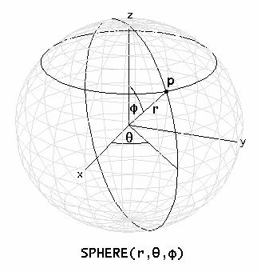
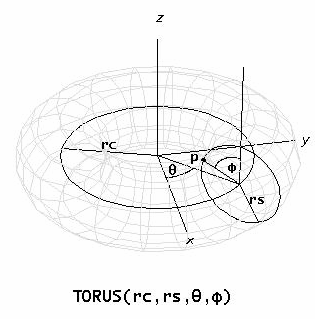

Coordinate System Conversion Functions
Use the following functions defined in the GraphicsFunctions.mthZG4ZTI utility file to generate rectangular coordinate vectors for points on surfaces parametrically defined in other coordinate systems. The resulting 2D and 3D rectangular coordinate vectors can be plotted in 2D and 3D-plot windows, respectively. Before plotting calls on these functions, make sure the plot window is set for rectangular coordinates and the Options > Approximate Before Plotting optionEVZ132 is turned on.
POLAR(r, θ) simplifies to a 2D rectangular coordinate vector for points on a surface defined in polar coordinates by radius r and co-longitude θ. r is the distance between the point and the origin. θ is the angle in radians measured counterclockwise from the positive x-axis. For example, to draw a circle of radius 3 in a 2D-plot window plot
POLAR(3, t)
varying t from −π to π. To draw a circle with 10 undulations plot
POLAR(3 + SIN(10·t)/2, t)
Alternatively, 2D polar coordinate vectors can be plotted directly in 2D-plot windows by selecting the Polar coordinate system using the Set > Coordinate System command162L784.
SPHERE(r, θ, φ) simplifies to a 3D rectangular coordinate vector for points on a surface defined in spherical coordinates by radius r, co-longitude θ, and co-latitude φ. r is the distance between the point and the origin. θ is the angle in radians measured counterclockwise as viewed from the positive z-axis from the positive x-axis to the projection of the point on the x-y plane as viewed from the origin. φ is the angle in radians from the positive z-axis to the point as viewed from the origin. (Note that some authors define spherical coordinates differently, such as interchanging these definitions of θ and φ).

For example, to draw a sphere of radius 4 in a 3D-plot window plot
SPHERE(4, s, t)
varying s from −π to π and t from 0 to π. To draw a sphere with dimples and bumps plot
SPHERE(4 + SIN(5·s)·SIN(5·t), s, t)
using 50 panels in both the s and t directions. To rotate or tilt the sphere, add appropriate constants to the angular parameters before simplifying. To shift the sphere away from the origin, add an appropriate 3D Cartesian coordinate vector to the result.
Alternatively, 3D spherical coordinate vectors can be plotted directly in 3D-plot windows by selecting the Spherical coordinate system using the Set > Coordinate System commandI8C1RB.
CYLINDER(r, θ, z) simplifies to a 3D rectangular coordinate vector for points on a surface defined in cylindrical coordinates by radius r, co-longitude θ, and altitude z. r is the horizontal distance between the point and the z-axis. θ is the angle in radians measured counterclockwise as viewed from the positive z-axis from the positive x-axis to the projection of the point on the x-y plane as viewed from the origin. z is distance between the point and the x-y plane.
For example, to draw a cylinder of radius 4 and height of 8 in a 3D-plot window plot
CYLINDER(4, s, t)
varying s from −π to π and t from -4 to 4. To draw a cylinder with 5 undulations plot
CYLINDER(4 + SIN(5·s), s, t)
using 50 panels in the s direction.
Alternatively, 3D cylindrical coordinate vectors can be plotted directly in 3D-plot windows by selecting the Cylindrical coordinate system using the Set > Coordinate System commandI8C1RB.
CONE(α, θ, z) simplifies to a 3D rectangular coordinate vector for points on a surface defined in conical coordinates by co-latitude α, co-longitude θ, and altitude z. α is the angle in radians from the positive z-axis to the point as viewed from the origin. θ is the angle in radians measured counterclockwise as viewed from the positive z-axis from the positive x-axis to the projection of the point on the x-y plane as viewed from the origin. z is the distance between the point and the x-y plane.
For example, to draw a cone at an angle of 45° and height of 8 in a 3D-plot window plot
CONE(45°, s, t)
varying s from −π to π and t from -4 to 4.
TORUS(rc, rs, θ, φ) simplifies to a 3D rectangular coordinate vector for points on a surface defined in toroidal coordinates by central radius rc, section radius rs, co-longitude θ, and co-latitude φ. rc is the radius of the central curve of the toroidal tube. rs is the radius of the circular cross-section (containing the toroidal point) formed by cutting the torus by a plane containing the z-axis and the toroidal point. θ is the angle in radians measured counterclockwise as viewed from the positive z-axis from the positive x-axis to the projection of the toroidal point on the x-y plane as viewed from the origin. φ is the angle in radians measured from the radius vector parallel to the positive z-axis to the radius vector to the toroidal point whose origins are at the center of the circular cross-section of the tube that contains the point.

For example, to draw a torus having a central radius of 4 and a cross-section radius of 1 in a 3D-plot window plot
TORUS(4, 1, s, t)
varying s and t from −π to π.
Other Graphics FunctionsZG4ZTI
Created with the Personal Edition of HelpNDoc: Easily create HTML Help documents